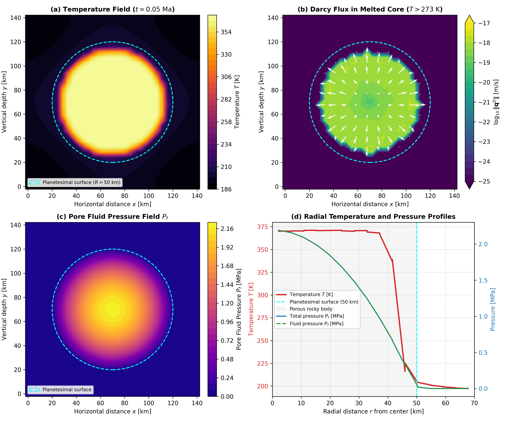

Tutorial: 2D Hydrothermal Circulation
This tutorial walks through setting up and running a two-dimensional hydrothermal circulation simulation in Erebus.jl at $32 \times 32$ cell resolution ($Nx = 33, Ny = 33$).
The simulation couples:
- Radiogenic decay heating of $^{26}\text{Al}$ in a porous planetesimal.
- Phase change from frozen pore ice to liquid water at $T_m = 273.0\text{ K}$.
- Darcy thermal buoyancy driven by temperature-dependent fluid density.
- Arrhenius fluid viscosity that enhances Darcy percolation in warm interior rock.
- Dynamic hydrofracture permeability enhancement driven by fluid overpressure.
Physical Setup
We model a porous planetesimal with radius $R_{\text{planet}} = 50\,000\text{ m}$ ($100\text{ km}$ diameter) in a $140\,000\text{ m} \times 140\,000\text{ m}$ computational domain. The planetesimal center is located at $(x_c, y_c) = (70\,000\text{ m}, 70\,000\text{ m})$.
The planetesimal starts at an ambient temperature of $T_0 = 170\text{ K}$. Short-lived $^{26}\text{Al}$ ($t_{1/2} \approx 0.717\text{ Ma}$) heats the rocky interior:
\[Q_{\text{rad}}(t) = Q_0 \exp\left(-\frac{t \ln 2}{\tau_{1/2}}\right)\]
Key Coupled Mechanisms
Water Melting and Viscosity Drop: Below $273.0\text{ K}$, pore water is immobile ice ($\eta_{\text{ice}} = 10^{12}\text{ Pa}\cdot\text{s}$). Above $273.0\text{ K}$, ice melts to liquid water whose viscosity follows the Arrhenius relation: $\eta_f(T) = \eta_{f0} \exp\left[\frac{E_a}{R} \left(\frac{1}{T} - \frac{1}{T_{\text{ref}}}\right)\right]$ where $\eta_{f0} = 1.0 \times 10^{-3}\text{ Pa}\cdot\text{s}$, reference temperature $T_{\text{ref}} = 293.15\text{ K}$, and activation energy $E_a = 15.0\text{ kJ/mol}$. Melting lowers viscosity by 15 orders of magnitude, unlocking Darcy flow.
Thermal Buoyancy: Liquid water expands with temperature above the melting point $T_{\text{melt}} = 273.0\text{ K}$: $\rho_f(T) = \rho_{f0} \max\left(0.1, 1 - \alpha_f (T - T_{\text{melt}})\right)$ This variation drives Darcy flux $\mathbf{q}^D$ under gravity: $\mathbf{q}^D = -\frac{k_\phi}{\eta_f(T)} \left(\nabla P_f - \rho_f(T) \mathbf{g}\right)$
Dynamic Hydrofracturing: When pore fluid pressure $P_f$ exceeds confining pressure $P_t$ plus tensile strength $\sigma_t$, effective stress becomes tensile ($P_{\text{eff}} = P_t - P_f \le -\sigma_t$), opening hydraulic fractures that increase permeability.
For detailed governing equations, see Governing Equations.
Simulation Configuration
The configuration is defined in configs/hydrothermal_benchmark.toml:
[grid]
xsize = 140000.0 # Domain width [m]
ysize = 140000.0 # Domain height [m]
Nx = 33 # Grid points in x
Ny = 33 # Grid points in y
[geometry]
rplanet = 50000.0 # Radius [m]
rcrust = 50000.0 # Crust radius [m]
xcenter = 70000.0 # Center x [m]
ycenter = 70000.0 # Center y [m]
psurface = 1000.0 # Surface pressure [Pa]
[time]
dt_initial = 3168.80878 # Timestep in Julian years (1e11 s)
dt_longest = 3168.80878 # Maximum timestep [yr]
start_time = 0.0 # Initial time [yr]
n_steps = 15 # Total steps to compute
[thermodynamics]
thermal_buoyancy = true
fluid_viscosity_mode = "arrhenius"
fluid_viscosity_Ea = 15000.0
fluid_viscosity_T0 = 293.15
fluid_viscosity_eta0 = 1.0e-3
tmfluidphase = 273.0
[poroelasticity]
hydrofracture = true
kappa_frac = 1000.0
gamma_frac = 1.0
k_frac_max = 1.0e-9
[materials]
tenssolidm = [5.0e4, 5.0e4, 1.0e8]
kphim0 = [1.0e-12, 1.0e-12, 1.0e-17]
[output]
output_dir = "output_hydrothermal"
savematstep = 1Running the Simulation
Execute the benchmark using Julia:
using Erebus
cfg = load_config("configs/hydrothermal_benchmark.toml")
run_simulation(cfg)During execution, Erebus.jl prints convergence statistics at each timestep, reporting temperature extremes, pressure ranges, and iteration counts.
To save and resume runs from intermediate checkpoints, see the Outputs and Checkpoints Guide.
Simulation Results and Analysis
After 15 timesteps ($t \approx 0.048\text{ Ma}$ after CAI formation), the temperature and pressure fields develop as shown:

Figure 1: Verification of 2D hydrothermal circulation in a 100 km diameter planetesimal on a $32 \times 32$ cell grid ($Nx = 33, Ny = 33$). (a) Temperature field $T(x, y)$ showing central radiogenic heating from fresh $^{26}\text{Al}$ decay reaching $T_{\text{max}} = 371.8\text{ K}$ with conductive cooling toward the surface. (b) Darcy flux magnitude $\|\mathbf{q}^D\|$ in the melted core ($T > 273\text{ K}$). (c) Pore fluid pressure field $P_f$, decreasing from $2.19\text{ MPa}$ at the center to $0\text{ MPa}$ at the outer boundary. (d) Radial profiles from center to surface, showing central lithostatic and pore fluid pressures reaching $P_t \approx P_f \approx 2.19\text{ MPa}$.
Physical Observations
- Pore Ice Melting: In steps 1 through 7 ($T < 273\text{ K}$), pore water remains frozen solid ice with negligible Darcy velocity. At step 8 ($t \approx 0.025\text{ Ma}$), the warm interior crosses $273\text{ K}$, melting pore ice into liquid water.
- Darcy Mobility: Liquid water viscosity drops from $10^{12}\text{ Pa}\cdot\text{s}$ to $1.2 \times 10^{-3}\text{ Pa}\cdot\text{s}$. In radially symmetric heating, fluid remains in hydrostatic equilibrium. Non-radial perturbations or heterogeneities are required to break symmetry and initiate macroscopic convective cells.
- Pore Pressure Equilibrium: Lithostatic confining pressure reaches $2.19\text{ MPa}$ at the center. Pore fluid pressure equilibrates with the solid matrix ($P_f \approx P_t$), maintaining non-negative effective stress ($P_{\text{eff}} \ge 0$).
Next Steps
- How to Configure Simulations: Set boundary conditions, material properties, and physical switches.
- Parameter Exploration: Script parameter sweeps across planetesimal properties.
- Outputs and Checkpoints: Inspect field data in JLD2 files and resume simulations.
- Fluid Viscosity Validation: Review benchmarks for Arrhenius water viscosity against experimental measurements.